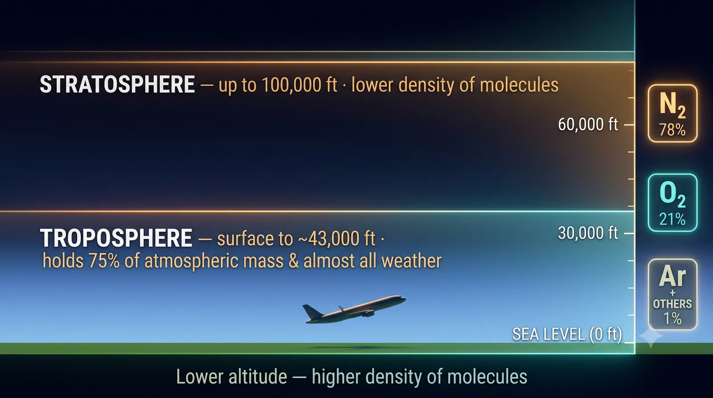
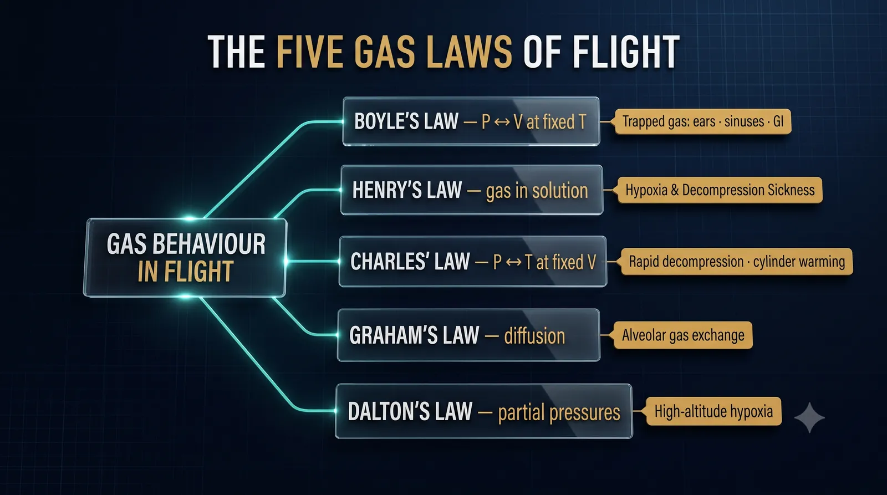

Human Performance & Limitations · Module A — The Ocean of Air
The Atmosphere
Chapter 2 — The atmosphere and its constituent gases, the five Gas Laws, and the International Standard Atmosphere. The foundation on which every physiological effect of flight is built.
BookHuman Performance & Limitations
AuthorCapt. Pankaj Pahil
ExamDGCA CPL / ATPL — HPL
Chapter2 of 26 · Module A
CINEMATIC PLATE 2.1 — pending generation (Banana Pro)Prompt Fig 2.1 (The Ocean of Air).
Plate 2.1 — The ocean of air: from the dense, weather-filled troposphere to the thin stratosphere the pilot must respect.
Why this chapter matters to a pilot
Aviation Physiology deals with the physical and mental effects of flight on aircrew personnel and passengers. In aviation, the demands upon the compensatory mechanisms of the body are numerous and of considerable magnitude. The environmental changes of greatest physiological significance involved in flight are:
Marked changes in barometric pressure
Considerable variation in temperature
Movement at high speed in three dimensions
This part of the syllabus familiarises you with the physiological problems of flight and assists in human compensation for the numerous environmental changes encountered in flight. Remember: every human is physiologically different and can react differently in any given situation.
§ 1The Atmosphere
Human beings live their lives in the lower reaches of the atmosphere where temperatures, pressures and oxygen supply are able to support life. The moment we climb, every one of those three variables shifts against us. To fly safely, you must first understand the layer you're flying in and what it is made of.
1.1 The Layers — Troposphere & Stratosphere
Troposphere – Average Top
13 km · 8.1 mi · 43,000 ft
Stratosphere – Reaches Above
100,000 ft
Where Almost All Weather Lives
Troposphere
Where Air is Densest
Lowest Layer (Surface)
The Troposphere height varies. On average it stretches from the Earth's surface to about 13 km (8.1 mi; 43,000 ft). The Stratosphere reaches up to over 100,000 ft. The troposphere contains almost all the weather, the air is densest in this lowest layer, and in fact the troposphere contains three-quarters of the mass of the entire atmosphere.

CINEMATIC DIAGRAM — pending generation (Banana Pro)Fig 2.2 (Vertical Structure of the Atmosphere).
Figure 2.2 — Vertical structure of the atmosphere: the troposphere holds ¾ of all atmospheric mass and nearly all weather.
1.2 Constituent Gases of the Atmosphere
The earth's atmosphere near the surface is composed primarily of Nitrogen and Oxygen. Together, the two comprise about 99% of the gas in the atmosphere. The remaining 1% is made up of Argon plus traces of other gases.
Composition of the lower atmosphere — exact percentages
Gas
Percentage
Gas
Percentage
Nitrogen (N₂)
78.084 %
Oxygen (O₂)
20.95 %
Argon (Ar)
0.934 %
Carbon Dioxide (CO₂)
0.036 %
Neon (Ne)
0.0018 %
Helium (He)
0.0005 %
Methane (CH₄)
0.00017 %
Hydrogen (H₂)
0.00005 %
Nitrous Oxide (N₂O)
0.00003 %
Ozone (O₃)
0.000004 %
In addition, water vapour is variable but typically makes up about 1 – 4 % of the atmosphere.
Critical principle to rememberThe relative proportions of these gases remain CONSTANT in the Troposphere and Stratosphere. What changes with altitude is not the percentage of oxygen — it is the total pressure, and therefore the partial pressure of each gas. Oxygen continues to make up 21 % of the air by volume at every altitude; only the partial pressure of oxygen, pO₂, falls.
Mnemonic"Never Ought An Cool Naval Helmsman Make His Nasty Owl" — Nitrogen, Oxygen, Argon, Carbon dioxide, Neon, Helium, Methane, Hydrogen, Nitrous oxide, Ozone — in descending order of abundance. (Optional aid — feel free to invent your own.)
§ 2The Gas Laws
The body responds to barometric pressure changes in temperature, pressure, and volume. These changes are rapid and continuous in the aviation environment. It is therefore essential to know the implication of these changes on our body and take preventive measures to counter them. The gas laws explain to us the science behind what goes on within our body when exposed to changes in pressure and temperature.

CINEMATIC DIAGRAM — pending generation (Banana Pro)Fig 2.3 (The Five Gas Laws).
Figure 2.3 — The five gas laws of flight and what each one explains in the cockpit.
2.1 Boyle's Law
Definition
At a constant temperature, a given volume of gas is inversely proportional to the pressure surrounding the gas. The volume of gas expands as the pressure surrounding the gas is reduced.
As altitude increases → gas expands.
As altitude decreases → gas compresses.
The amount of volume expansion is limited by the pliability of the structure or membrane which encloses the gas.
Examples in aviation & medicinePASG / Air Splints · Respiratory Rate & Depth changes · Flow rates of IV sets · ETT or Tracheal cuff pressures · Trapped gas effects within the body (middle ear, sinuses, GI tract — every pilot has felt these).
Figure 2.4 — Boyle's Law: as pressure halves, a fixed mass of gas doubles in volume. Trapped gas in sinuses, ears, gut and fillings expands as you climb.
2.2 Henry's Law
Definition
The amount of gas in solution is proportional to the partial pressure of that gas over the solution. As the pressure of the gas above a solution increases, the amount of that gas dissolved in the solution increases; the reverse is also true — as the pressure of the gas above a solution decreases, the amount of gas dissolved decreases and forms a "bubble" of gas within the solution.
In normal physiologic function, this law can be seen in the transfer of gas between the alveoli and the blood. This is significant physiologically for the occurrence of evolved gas disorders, e.g. decompression sickness. It explains the hypoxia experienced with increasing altitude — as the pressure of gases is reduced with ascent, the amount of gases dissolved in solution decreases, and this leads to hypoxia and may lead to nitrogen bubble formation.
Everyday exampleBottle of soda. With the cap on, the gas within the solution is at equilibrium. With the cap removed, the gas pressure decreases and bubbles are released into the solution. Your blood does exactly the same thing on a sudden cabin depressurisation.
Clinical link — DCS (decompression sickness)
A pilot who has been SCUBA diving cannot climb shortly after surfacing because Henry's Law is still working against them — dissolved nitrogen in their blood will come out of solution as bubbles when ambient pressure falls. (Strict wait-times before flying after diving are covered in a later section.)
2.3 Charles' Law
Definition
The pressure of a gas is directly proportional to its temperature with the volume remaining constant. Temperature increases make gas molecules move faster, greater force is exerted, and volume expands.
The law explains:
The temperature changes associated with rapid decompression.
The pressure changes that induce temperature changes with an oxygen cylinder (a freshly-charged O₂ bottle feels warm; a discharging one feels cold).
Classic illustrationShaving cream can be placed into a fire — heat raises the internal pressure of the can until the structure fails. Same physics governs the rapid heating of an oxygen cylinder during fast filling.
2.4 Graham's Law — Law of Gaseous Diffusion
Definition
Gases diffuse or migrate from a region of higher concentration (or pressure) to a region of lower concentration (or pressure) until equilibrium is reached. The physiological significance is in the explanation of gas exchange.
SOP — How your lungs use this lawOxygen moves from the alveoli into the blood, and from the blood into the tissues due to this phenomenon. The whole architecture of the respiratory system relies on Graham's Law for survival.
2.5 Dalton's Law — Law of Partial Pressures
Definition
Partial pressures describe the distribution of certain gases in a mixture and follows Dalton's law which states that the total pressure of a mixture of gases is equal to the sum of the partial pressures of the gases which compose the mixture. As altitude increases — gases exert less pressure. This explains the hypoxia that occurs with flight to higher altitudes.
Worked example — Oxygen at different altitudes (Dalton's Law in action)
At Sea Level: O₂ = 21 % & pO₂ = 21 % × 760 mm = ≈ 160 mmHg
At 8,000 ft: O₂ = 21 % & pO₂ = 21 % × 565 mm = ≈ 119 mmHg
The barometric pressure at 36,000 ft is one-fourth of that at sea level. Hence the quantity of oxygen available is proportionately low. Whatever the air pressure, oxygen continues to make up 21 % of the air by volume. In other words, the proportion of oxygen in the air always stays the same whatever the altitude. The partial pressure of Oxygen decreases with altitude as does the total pressure of air.
Exam-critical takeaway
The percentage of O₂ in air does NOT change with altitude — it is always 21 %. What kills the pilot is the falling partial pressure of that oxygen, because diffusion across the alveolar membrane depends on pressure gradient, not percentage.
Quick-Reference — The Five Gas Laws of Aviation Physiology
Law
One-line Statement
What it Explains in Flight
Boyle's
P × V = constant (at fixed T) — pressure ↑ → volume ↓
Trapped-gas pain in ears, sinuses, teeth, GI tract; tracheal-cuff & IV behaviour
Henry's
Gas dissolved ∝ partial pressure over the solution
Decompression sickness, hypoxia mechanism, alveolar gas transfer
Charles'
P ∝ T (at fixed V) — warming raises pressure
Rapid-decompression temperature drop; O₂ cylinder heating
Graham's
Gases diffuse from high → low concentration
O₂ from alveoli → blood → tissues; CO₂ in opposite direction
Dalton's
Total P = Σ partial pressures
Why high-altitude hypoxia happens despite air being "21% oxygen"
§ 3Variation of Pressure & Temperature with Altitude
3.1 The International Standard Atmosphere (ISA)
What ISA actually is
The International Standard Atmosphere is used to show standardised values for temperature, pressure, density and lapse rate. Pressure decreases with altitude throughout the atmosphere. Temperature decreases with altitude in the Troposphere.
ISA Sea-Level Values (memorise these cold)
Sea-Level Pressure
1013.25 hPa
Equivalent (mb)
1013.25 mb
Equivalent (psi)
14.7 lb/in²
Equivalent (Hg)
29.92 in Hg
Equivalent (mmHg)
760 mm Hg
ISA Lapse Rate
1.98 °C / 1000 ft
Strict ISA limits — examination valuesTemperature reduces at 1.98 °C per 1000 ft up to 36,090 ft. Thereafter it remains constant at –56.5 °C. (The 1.98 °C figure is the precise ISA lapse rate; many texts round to 2 °C / 1000 ft for mental maths — never round in your exam paper.)